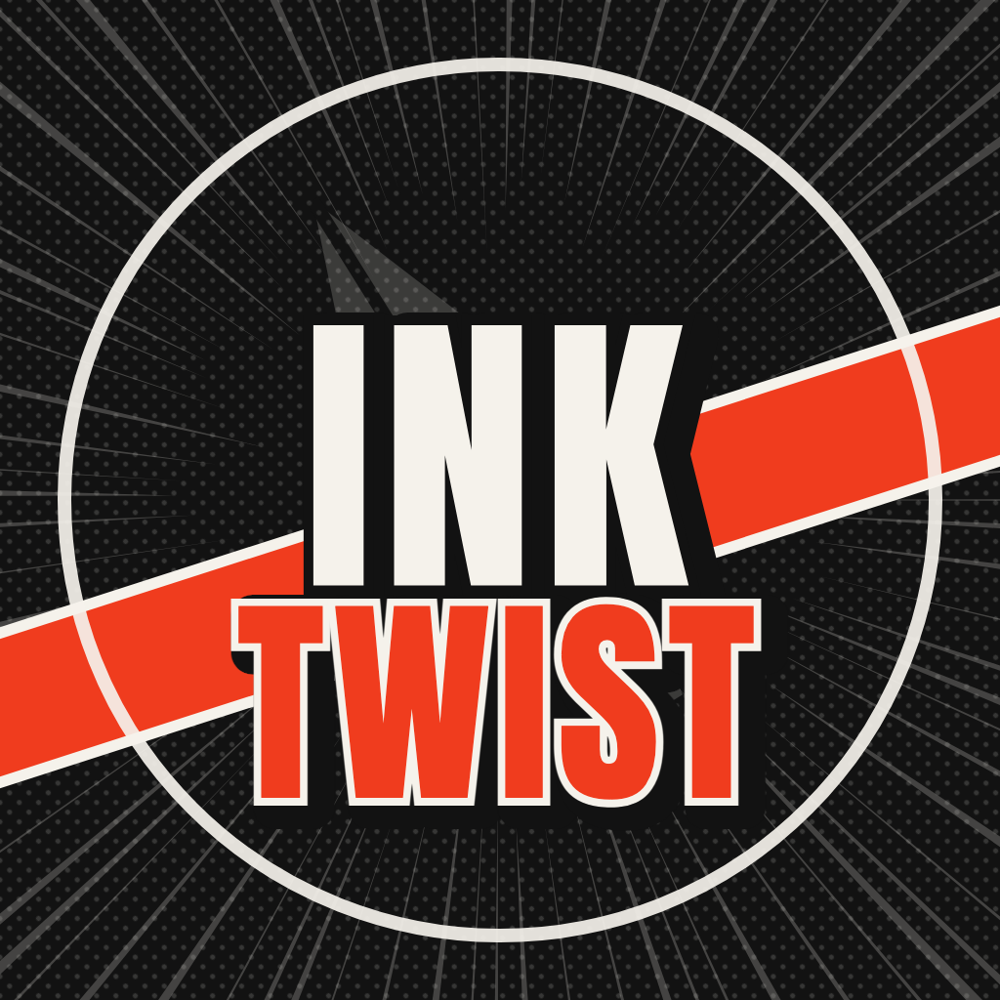

InkTwistPrivacy Policy
Last updated: November 24, 2026 · Scope: InkTwist Yayin personal publishing tool
What this tool does
InkTwist Yayin is a personal tool run only by the InkTwist channel owner on their own Mac.
It uploads the owner's own videos to the owner's own YouTube channel (UCab9g680gj8AYf-prm-Guig), sets captions/metadata, and reads the channel's own YouTube Analytics reports.
This tool is not available to the public and never accesses third-party accounts.
Data processed
- OAuth tokens: Authorization tokens issued by Google for the owner's own YouTube channel. Stored solely in the owner's local macOS Keychain; never transmitted to any third-party server or written to public repositories.
- Channel and video identifiers: Channel ID, video IDs, upload status, and aggregate channel analytics metrics needed to verify uploads and measure performance.
No personal data from viewers or visitors is collected, stored, sold, shared, or used for advertising.
Third-party platform policies
This tool uses YouTube API Services. Usage is also governed by the YouTube Terms of Service and the Google Privacy Policy.
Retention and revocation
OAuth credentials remain in the owner's local macOS Keychain until removed. Access can be revoked at any time via Google Account Permissions and deleted locally from Keychain.
Contact
Channel owner contact: @InkTwistt on X.